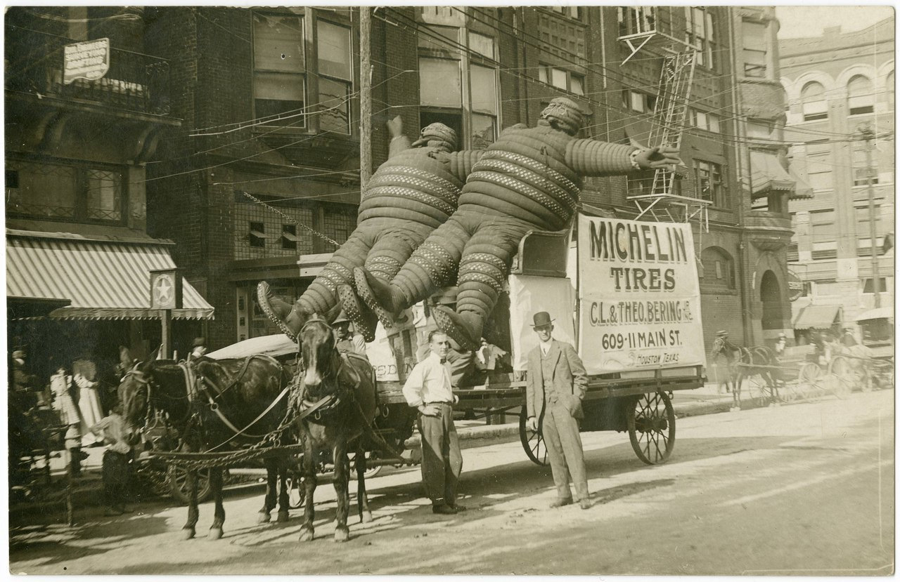
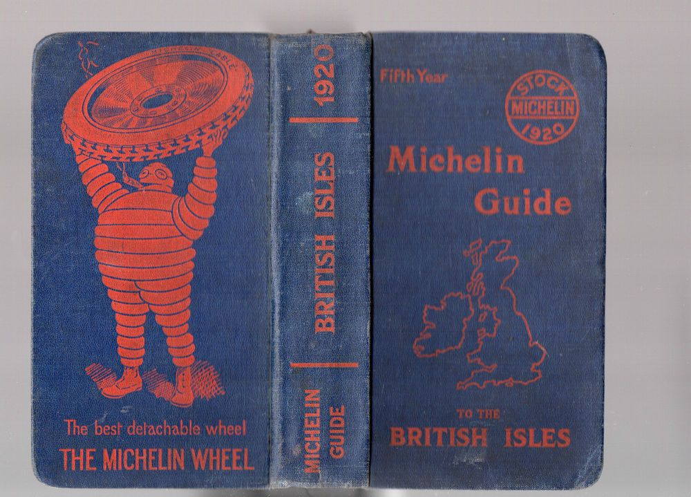
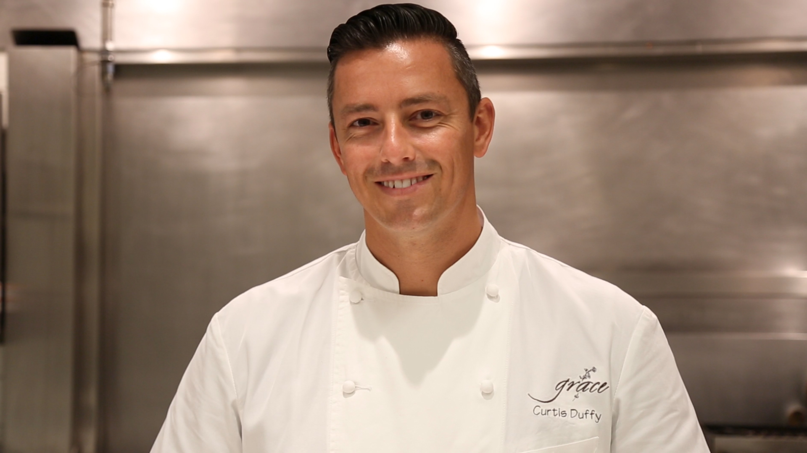
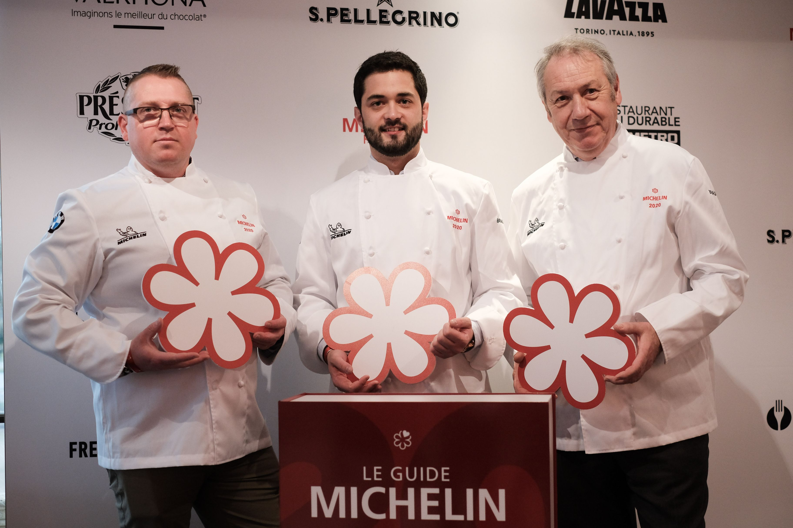

Interestingly, the invention of the Michelin star rating coincides with the invention of the automobile. The first Michelin Guide was compiled in 1900 by Michelin Tire founders, French industrialist Andre Michelin, along with his brother Edouard Michelin. They wanted to create demand for automobiles, and therefore, the tires they manufactured. 
The first print of the Michelin Guide was 35,000 copies and included maps, along with instructions on how to repair and change tires. It also included a list of restaurants, hotels, mechanics, and gas stations along popular routes in France.
At the time, there were only a few hundred cars in all of France. The guide was given away for free, in hopes to create demand for cars. Within its first decade of existence, the Michelin Guide expanded rapidly and became available throughout Europe, as well as Northern Africa. Although the guides contained valuable information about restaurants, the ultimate end goal for the Michelin brothers was to generate profit for their tire business.
The outbreak of World War I in 1914 temporarily halted production of the guide, but by 1920 it was back on track. It was then that the Michelin brothers decided to ramp up the quality of the guide, eliminate advertising, and start charging money for it.
The first Michelin star ratings were given in 1926. The restaurants, all of which were in France, were awarded a single star if they were deemed a “fine dining establishment.” In 1931, the rating system was expanded to become the Michelin three-star rating that it continues to be today.
Unlike most star rating systems, 1 star is not a bad thing. If any amount of Michelin stars are granted to a restaurant, it is a huge honor and a rare accomplishment.
It is worldly acclaimed that if a restaurant managed to earn at least one Michelin Star, it becomes a much more popular and acknowledged establishment.
The guide took a hiatus during World War II, and only resumed in late 1939 because it contained maps that were useful to the Allied Forces. However, the Michelin star rating was reduced to a 2-star system during this time because of food shortages. Understandably, quality suffered at restaurants throughout Europe, so the yardstick was adjusted accordingly.
In 1955, Michelin came up with a rating system that acknowledged restaurants serving high-quality fare at moderate prices, called the Bib Gourmand. This system highlights dining opportunities that are more reflective of economic standards. They are customized by region and country based on the cost of living – and gives diners a chance to eat well without breaking the bank.
The Michelin star rating didn’t take hold in America until 2005 and concentrated solely on fine dining in New York at the time. Today, the Michelin Guide reviews restaurants in select U.S. cities including Chicago, New York, Los Angeles, Las Vegas, and San Francisco. If you’re an aspiring chef, you’ll want to focus on these cities after graduation if that’s your career goal.
First, the Michelin Guide team will select a number of restaurants in select locations to be inspected by an anonymous reviewer. After the inspector visits the selected restaurant, they write a comprehensive report about the total culinary experience, including the quality and presentation of the dishes, among other rating criteria outlined below. The group of Michelin Inspectors will then meet to analyze the reports and discuss in-depth which restaurants are worthy of a Michelin star (or two or three).
Chef Curtis Duffy, a friend of Auguste Escoffier School of Culinary Arts, partnered with Michael Muser to build Grace restaurant in Chicago, which was honored with three Michelin stars four years in a row from 2015 to 2018. In July 2020, Duffy opened a new restaurant called Ever which has earned 2 Michelin stars.
When I started at Avenues, they announced [the Michelin stars], and I was really excited about where I stood in the whole world of cuisine. I was just getting my voice in the world. The first year that it came out in Chicago, we were able to receive two Michelin stars. And that was an incredible feat. It just solidified that I was doing what I was supposed to be doing.
- CURTIS DUFFY, EXECUTIVE CHEF / OWNER OF TWO-MICHELIN STAR RESTAURANT
Elements of the restaurant such as ambiance, decor, and quality of service are supposedly not considered in the report, but many think that the total experience may subconsciously woo the reviewers.
No doubt, restaurants that receive a Michelin star rating are filled with pride, gain prestige, and usually get an increase in exposure and business. However, because of the extremely high expectations in the rating system, there’s been a growing trend to reject Michelin star ratings around the world – some restaurateurs even demanding that their star rating be removed. They feel that the expectations of the star system are unreasonable and restrict a chef’s creativity in the kitchen.
Still, in today’s culinary industry there’s a reverence held for the iconic Michelin star rating system. Some restaurateurs go so far as to say it’s the only rating that matters because it’s authentic – and they have a point – since Michelin inspectors are among the few who remain completely anonymous when reviewing a restaurant.
Although some restaurants claim to have learned how to tell, in theory – the casual diner will have the exact same experience as the inspector – no special treatment. And if a restaurant is attentive enough to figure out the signals a Michelin star inspector gives away, then that’s a restaurant that pays very close attention to their craft, and is probably worth a visit!
While it’s over 100 years old, if you’re an up-and-coming chef who wants to stay on top of the latest culinary trends, the Michelin Guide is still a top source in the world of fine dining.